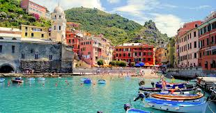

Takımımız 😎

KEREM CAN

MISRA DENİZ

İtalya gezilecek yerler bakımından dünyanın en güzel ülkelerinden. Kuzeyinden güneyine gezip görülebilecek onlarca yer var. Sadece gelişmiş büyük şehirlerde değil, yalnızca birkaç sokaktan meydana gelen ve muhteşem doğal güzelliklere sahip köylerde gezerken de olağanüstü zaman geçirebilirsiniz.Yüzyıllar boyunca Roma İmparatorluğu gibi birçok önemli imparatorluğa ev sahipliği yapan İtalya’da görülmesi gereken çok önemli bölgeler var. Sahip olduğu tüm bu doğal güzellikler ve tarihi eserler ile İtalya bana göre yurt dışına hiç çıkmamış olanların ilk görmesi gereken yerlerden biri.
Milano, İtalya’nın modanın ve iş dünyasının kalbinin attığı bir yer olarak Avrupa’nın en zengin ve pahalı yerlerinden biri.
Kültür ve operanın merkezi olan Verona, en az Venedik kadar büyüleyici bir yer. Ziyaretçiler kentte bulunan birçok farklı tarihi yapıyı keşfedebiliyor.
Yaklaşık 50 km’lik kıyı şeridi boyunca uzanan Amalfi Sahili, tatilcilerin popüler mekanlarından biri. Yine İtalya’nın UNESCO Dünya Mirası Listesi’nde yer alan bu kıyılar, dünyanın en güzel yollarından biri olarak da kabul ediliyor.
Orta İtalya bölgesinde bir Toskana şehri olan Siena, İtalya’nın en çok turist ziyareti alan şehirlerinden birisi. Yine UNESCO tarafından Dünya Kültür Mirası Listesi’ne alınan Siena, labirenti andıran daracık sokakları, düzgün mimarisi, tarihi dokusu ile nefis bir yer.
Venedik dünyanın en güzel meydanlarından sayılan San Marco Meydanı ve şehrin en ünlü kilisesi olan San Marco Bazilkası, Venedik’te gezilebilecek yerler arasında en önemlileri sayılıyor. Dünyanın en romantik şehirlerinde hemen her zaman ilk sırada
Dünyanın en ünlü şehirlerinden olan Roma, antik geçmişiyle, her yıl dünyanın en çok turist çeken şehirleri arasında ilk sıralarda yer alıyor.Roma’da, görülmesi gereken yerler arasında Kolezyum, Sistine Şapeli, birbirinden güzel meydanlar ve enfes heykelleriyle çeşmeler yer alıyor.
Milano , Napoli , Siena , Amalfi Kıyıları, Verona ,Garda Gölü , Roma ,Floransa


© 2018 Perfect Travel. All rights reserved | Design by Pınar Münüklü